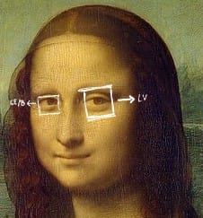
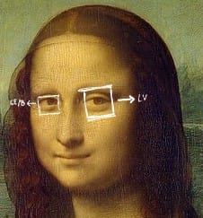
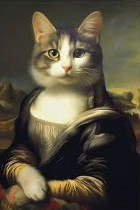

Salutare tuturor! Recunosc, a durat ceva să pun cap la cap acest articol, dar sunt sigură că subiectul ales vă va ține cu ochii lipiți de ecran! Am ales pentru articolul de față să mă aventurez în universul intrigant al marilor capodopere – „Mona Lisa” și „Cina cea de Taină” – două opere care ascund mai multe mistere decât ne-am fi imaginat.
Supraviețuirea miraculoasă a „Cinei celei de Taină”
Știați că celebra „Cina cea de Taină” a lui Leonardo da Vinci a supraviețuit unui bombardament în timpul celui de-al Doilea Război Mondial? Pereții din jurul frescei au fost distruși de o bombă, dar pictura a rămas intactă datorită unor scuturi de protecție plasate în jurul său. Cum a fost posibil? Cu puțin timp înainte de bombardamente, autoritățile italiene au anticipat că această operă ar putea fi în pericol. Drept urmare, au creat o structură de protecție cu saci de nisip și grătare de lemn, concepută pentru a absorbi impactul și a împiedica resturile de moloz să lovească fresca direct. Astfel, „Cina cea de Taină” a rămas în picioare, în ciuda distrugerii complete a pereților mănăstirii.
V-am stârnit curiozitatea?👀
Identitatea reală a Mona Lisei
Deși este cunoscută sub numele de „Mona Lisa”, identitatea reală a femeii portretizate continuă să fascineze și să genereze controverse. Una dintre cele mai cunoscute teorii sugerează că aceasta ar fi Lisa Gherardini, soția negustorului florentin Francesco del Giocondo, de unde și supranumele „La Gioconda”.
O altă ipoteză intrigantă este aceea că portretul ar reprezenta, de fapt, un autoportret al lui Leonardo da Vinci, bazat pe suprapuneri digitale care dezvăluie asemănări izbitoare între trăsăturile pictorului și ale personajului din tablou. Ca o paranteză la acest subiect, mi s-a spus, ca artist, că este comun ca pictorii să-și transpună trăsăturile proprii în operele lor, fie că acest lucru se întâmplă în mod conștient sau involuntar. Nu știu dacă acest fenomen este universal adevărat, dar dacă este, ar putea fi o explicație interesantă pentru asemănările dintre trăsăturile lui Leonardo și cele ale Mona Lisei.
O abordare diferită, propusă de Sigmund Freud, susține că portretul ar putea să o reprezinte chiar pe mama artistului, Caterina. Freud considera că zâmbetul enigmatic al Mona Lisei evocă o amintire afectuoasă din copilăria lui Leonardo, reflectând o legătură profundă cu mama sa.
Există și teorii mai puțin cunoscute, cum ar fi cea care afirmă că Mona Lisa ar fi Pacifica Brandano, amanta lui Giuliano de' Medici. Se crede că Giuliano i-ar fi cerut lui Leonardo să creeze acest portret pentru a celebra relația lor.
 
Misterele ascunse în Mona Lisa
În 2010, cercetătorii italieni au descoperit mici simboluri în ochii portretului, vizibile doar la o mărire extremă. În ochiul drept apare litera „LV” (inițiala lui Leonardo), iar în ochiul stâng ar putea fi "CE” sau „B”. Pe fundal, detaliile includ ceea ce pare a fi un număr, „72” sau „L2”, dar semnificația lor rămâne necunoscută. Leonardo, cunoscut pentru atenția sa obsesivă la detalii, pare să fi adăugat aceste elemente cu intenția de a amplifica misterul tabloului, atrăgând privitorii să descopere semnificațiile ascunse.
Misterul zâmbetului Mona Lisei
Zâmbetul ei enigmatic a dat naștere la o întreagă serie de interpretări. Leonardo a folosit tehnica „sfumato”, un joc de lumini și umbre care creează tranziții subtile, dând zâmbetului o calitate „schimbătoare”. Când te uiți direct la zâmbet, acesta poate părea mai puțin evident, dar dacă privești ușor în lateral, devine mai vizibil – un efect care face zâmbetul să pară viu și schimbător. V-ați gândit vreodată că poate ideea acestui portret este să ne arate cât de greu este să înțelegem cu adevărat o persoană?
Înapoi la „Cina cea de Taină” – Tensiune și simbolism
„Cina cea de Taină” (sau „Ultima Cină”), realizată de Leonardo da Vinci între 1495 și 1498, este una dintre cele mai importante și fascinante opere de artă ale Renașterii, încărcată de semnificații simbolice și detalii inovatoare. Pictura se află pe peretele Mănăstirii Santa Maria delle Grazie din Milano și reprezintă momentul biblic în care Iisus Hristos le dezvăluie discipolilor săi că unul dintre ei îl va trăda. Deși sunt multe de discutat, voi aborda doar câteva detalii din tablou care mi se par importante de dezbătut.
Simbolistica aranjării apostolilor
Fiecare grup de apostoli transmite o reacție unică la anunțul trădării, iar pozițiile lor creează o dinamică simbolică între loialitate, șoc și suspiciune. Da Vinci a plasat fiecare personaj pentru a exprima emoțiile și rolurile acestora în scenă, dându-i astfel frescei o intensitate aproape teatrală. De exemplu, o teorie popularizată de romanul Codul lui Da Vinci sugerează că personajul din dreapta lui Iisus ar fi Maria Magdalena și nu apostolul Ioan, sugerând existența unei legături speciale între cei doi. Deși nu există dovezi concrete pentru această interpretare, ideea a fost intens dezbătută, mai ales datorită poziționării lor și lipsei tradiționale de simboluri religioase evidente în pictură.
Un alt aspect este faptul că în pictură, Iuda este reprezentat ținând o pungă de arginți în mână, simbolizând banii primiți pentru trădarea lui Iisus. Leonardo l-a plasat în umbră, un detaliu subtil pentru a sublinia natura sa duplicitară. În plus, Iuda întinde mâna spre aceeași farfurie ca Iisus, o referire la un verset biblic care menționează că trădătorul își va întinde mâna în același vas cu Iisus.
.jpg)
.jpg)
Ce semnficație au cuțitul și sarea vărsată pe masă
Dacă mergem mai departe cu analiza, vedem că în partea dreaptă a mesei, se face vizibilă printre personaje o mână fără stăpân, ce ține un cuțit. Există dezbateri despre mâna care ține cuțitul îndreptat spre Iuda. Majoritatea specialiștilor consideră că această mână îi aparține lui Petru, simbolizând dorința lui de a-l apăra pe Iisus. Poziționarea sa ciudată a fost intenționată pentru a crea o atmosferă tensionată, dar și pentru a sublinia loialitatea lui Petru față de Învățătorul său.
În mod traditional, Petru este asociat cu apărarea lui Iisus în fața pericolului, inclusiv prin utilizarea unui cuțit. În episodul biblic din Grădina Ghetsimani, Petru scoate un cuțit și taie urechea unui soldat pentru a-l proteja pe Iisus, fapt care îl prezintă ca un discipol combativ. Cuțitul din „Cina cea de Taină” ar putea simboliza această dorință de a-și apăra Învățătorul.
Sarea vărsată pe masă, poziționată în dreptul lui Iuda, transmite un mesaj simbolic puternic. În tradiția culturală și religioasă, sarea era considerată un simbol al purității și al legămintelor sacre, dar vărsarea ei implica ghinion, pierdere sau chiar trădare. În acest context, sarea vărsată din „Cina cea de Taină” devine o aluzie subtilă la actul de trădare al lui Iuda, marcând ruperea armoniei dintre el și ceilalți apostoli. Acest mic detaliu reflectă complexitatea și grija cu care Leonardo a folosit elementele simbolice pentru a intensifica dramatismul și semnificația scenei.
Probleme de restaurare
In mod surprinzator, lucrarea prezintă imperfecțiuni ascunse. Spre deosebire de frescele obișnuite, în care se folosește vopsea aplicată pe tencuială proaspătă, Leonardo a experimentat cu o tehnică unică, aplicând vopsea pe tencuială uscată, pentru a obține culori mai bogate și mai detaliate. Această tehnică nu a rezistat insă bine în timp, iar „Cina cea de Taină” a fost restaurată în repetate rânduri. O restaurare majoră a fost realizată între 1978 și 1999, când s-a încercat recuperarea culorilor originale și eliminarea modificărilor ulterioare. Procesul a fost controversat, deoarece restauratorii au trebuit să completeze porțiuni din pictură unde originalul era pierdut.
În prezent, fresca este protejată într-un mediu controlat pentru a preveni deteriorările suplimentare cauzate de umiditate, lumină sau poluare.
În loc de concluzie, vă las cu această versiune jucăușă a Mona Lisei. Cine știe, poate Leonardo ar fi avut și el o slăbiciune pentru pisici.😂
Postat pe: 04.12.2024